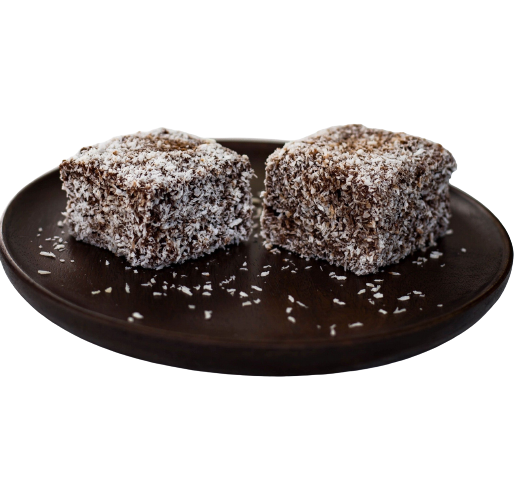

Hozzávalók
- 3 dkg rama margarin
- 25 dkg koronás porcukor
- 1 csomag vaníliás cukor
- 3 evőkanál méz
- 1 db tojás
- 1 evőkanál reszelt citromhéj
- 28 dkg liszt
- 1 csomag sütőpor
- 2 dl tej
- 33 dkg rama margarin
- 30 dkg koronás porcukor
- 6 evőkanál kakaó
- 15-18 evőkanál tej (kb. 250 ml)
- 6 evőkanál rum
- 20-25 dkg kókuszreszelék
(kb. 32 kockához)
Tésztához:
A csokoládé mázhoz:
A díszítéshez:
Elkészítés
- Megolvasztjuk a margarint
- Porcukrot, vaníliás cukrot, mézet, tojást, reszelt citromhéjat és az olvasztott margarint összekeverjük
- Lisztet a sütőporral elkeverjük és a tejjel váltakozva a cukros margarinhoz adjuk, jól eldolgozzuk
- Tepsit kikenjük margarinnal, kilisztezzük, majd beleöntjük a tésztát
- Előmelegített sütőben, 180°c-on 20-25 percig sütjük
- Elkészítjük a csokoládémázat. A margarint felolvasztjuk, a porcukorral habosra keverjük, hozzáadjuk a kakaót, a rumot és a tejet, egy lábasba öntjük és állandó keverés mellett felforraljuk. A tűzről levéve kicsit lehűtjük.
- A kész tésztát még melegen kb: 4x4 cm-es kockákra vágjuk, a csokoládémázba mártjuk, majd megforgatjuk a kókuszreszelékbe
Jó étvágyat!
